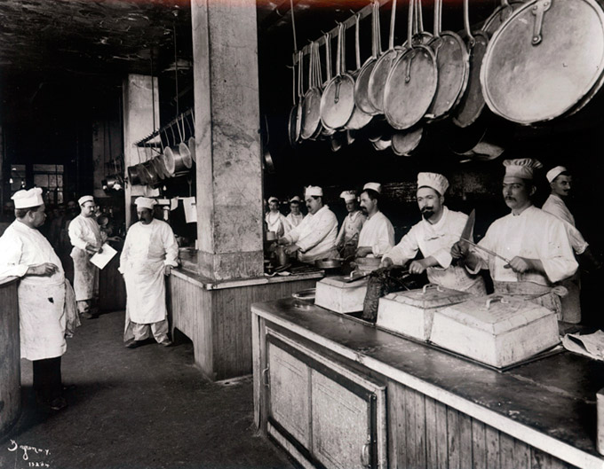

On May 14th, 1982, our founders put their collective cooking knowledge and exceptional pita bread recipes together and opened the first Pita Palace in Queens, New York. After years of local success, they introduced Pita Palace to the rest of the nation. Now with 8 different locations from coast to coast, Pita Palace is bringing the best pita dishes to good folks like you. Stop in and check us out today, we'll make sure you get a free fresh sample of our bread when you do!